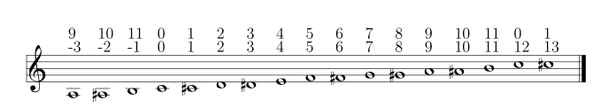

1. Abstract
This article addresses a topic related to musical set theory, and particularly to basic operations: inversion, transformation by cycles of fifths and fourths (M7 and M5).
It demonstrates the need to be able to choose the axis of symmetry around which the transformations are applied, in order to overcome the negative influence of the pitch-class zero in these operations.
The solution proposed here takes David Lewin’s idea for inversion (Iuv) and generalizes it to the other M5 and M7 transformations.
Finally, the extended affine function has a new parameter, but remains fully compatible with current usage, through a logic that automatically assigns a default pivot value, similar to the "moveable-DO" system.
The code for the affine function with pivot is provided (TypeScript).
Keywords: musical set theory, pcs, basic operators, fixed zero problem, label, label free, M11, M5, M7, Affine mapping from Zn to Zn
2. Usual operations
In context of twelve-tone equal temperament, more specialy in pitch-class space, we note \$ZZ_12\$ the set \$ZZ"/"12ZZ\$
\$ ZZ_12 = {bar0, bar1, bar2, bar3, bar4, bar5, bar6, bar7, bar8, bar9, bar10, bar11}\$
Each element \$i\$ of \$ZZ_12\$ is representative of a class of numbers multiple of 12. For example, \$i = bar1\$ is representative of positive numbers {1, 13, 25, 37, …} (\$i + 12q\$) and negative numbers {1, -11, -23, -35, …} (\$i - 12q\$)
2.1. Modulo operation
By convention, \$ZZ_n\$ is represented by the set of first positive numbers (starting with zero) and often the bare notation above is omitted.
Modulo is an operation that reduces any number in \$ZZ\$ to its representative number.
The 12-hour clock is a good example. 13h is mapped to 1h, midnight -1h to 11H.
...
24 25 26 27 28 ... <- i - 12 * 2
12 13 14 15 16 17 18 19 20 21 22 23 <- i - 12 * 1
0 1 2 3 4 5 6 7 8 9 10 11 <= 12 pitch-class representative
-12 -11 -10 -9 -8 -7 -6 -5 -4 -3 -2 -1 <- i + 12 * 1
... -20 -19 -18 -17 -16 -15 -14 -13 <- i + 12 * 2
...
The logic of modulo numbers from \$ZZ\$ to \$ZZ_(n)\$ representative numbers is: \$i |-> i - n xx floor(i/n)\$, with \$n>0\$, consistent [Knuth] version [modulo].
|
\$floor(x)\$: This symbol denotes floored of \$x\$, the largest integer less than or equal to \$x\$. Ex : \$floor(0.99) |-> 0\$ and \$floor(1.01) |-> 1\$ (the integer part) |
In our case, \$floor(i/n)\$ gives the line number above and below the reference pitch-class representative line below.
Some illustrative cases:
-
25 modulo 12 = 1
\$25 - n xx lfloor 25/n rfloor\$ = 25 - 12 × Math.floor(25/12) = 25 - (12 × 2) = 1 -
13 modulo 12 = 1 (13 - 12*1)
-
-11 modulo 12 = 1 (-11 + 12*1)
-
-13 modulo 12 = 11 (-13 + 12*2)
\$-13 - n xx lfloor (-13)/n rfloor\$ = -13 - 12 × Math.floor(-13/12) = -13 + (-12 × -2) = -13 + 24 = 11

2.2. Basic operations
In musical set theory, into context of twelve-tone equal temperament (n=12), the basic operations are generally represented by ( [Rahn] [Fripertinger] [Moreno-Argon], among others):
-
Transposition : \$T_k : ZZ xx ZZ_12 → ZZ_12 , x |-> T_k(x) := x + k\$
-
Inversion : \$I : ZZ_12 → ZZ_12 , x |-> I(x) := -x\$
-
Cycle transformation:
-
Cycle fourth transformation : \$M_5 : ZZ_12 → ZZ_12 , x |-> M_5(x) := 5x\$
-
Cycle fifths transformation : \$M_7 : ZZ_12 → ZZ_12 , x |-> M_7(x) := 7x\$
-
If we look carefully, we have a multiplication (inversion as \$-1x\$, \$M_5\$ and \$M_7\$) and one addition (transposition).
We can combine these operations in the form of an affine operation, ax + b, of Zn into Zn
3. Affine operation
The well-known affine function (ax + b) will allow us to unify the primitive multiplication and transposition operations into one single operation (with the aim of creating a group, not covered by this document).
3.1. Special Affine Operation
Multiplication and Transposition may be grouped into one special affine operation that operates on \$P(ZZ_n)\$.
When a group G acts on a set E then G acts in a natural way on P(E) := {A | A ⊆ E}, which is the set of all subsets of E.
Thus, when \$ZZ_12\$ is seen as the set of 12 pitch-classes, \$P(ZZ_12)\$ represents the set of possible scales restricted to an octave.
Traditional operation name is represented by \$T_kMa\$ (a right action, first Ma for multiplication by a then Tk for transposition by a step of k semitones), see [Rahn].
Special Affine Operation
\$ T_kMa : P(ZZ_n) xx ZZ xx NN -> P(ZZ_n)\$
\$T_kMa(A) := {\ (ax + k) mod n \ }, forall x in A\$
Where a is coprime with n and k a step of transposition
The coprime constraint under a is important because it ensures that the operation gives a unique image to each elements of \$A sube ZZ_n\$, another way of saying \$A in P(ZZ_n)\$
Examples when \$n = 12\$. \$ZZ_12 = {0, 1, ..., 11}\$, the coprimes with \$n\$ are {1, 5, 7, 11}
-
\$T_0M1("[0 4 7]") -> "[0 4 7]"\$ (neutral op)
-
\$T_5M1("[0 4 7]") -> "[5 9 12]"\$ so \$"[0 5 9]"\$ Transposition of 5 semitones (T5)
-
\$T_0M11("[0 4 7]") ->"[0 5 8]"\$ Inversion, (C Maj → Fm/5th)
-
\$T_5M5("[0 4 7]") -> "[1 4 5]"\$ Cycle fourths transformation followed by five semitone step transposition.
|
\$T_kMa\$ is also known as TTO operators (for Twelve Tone Operators) and it’s defined affine group ([Morris], [TOPOS]). For an in-depth study, with of a high level of mathematical conciseness, see [Fripertinger] |
Ma is its own inverse, and each of coprime can be deduced from another two.
| Matrix A | ID | M5 | M7 | M11 |
|---|---|---|---|---|
ID |
ID |
M5 |
M7 |
M11 |
M5 |
M5 |
ID |
M11 |
M7 |
M7 |
M7 |
M11 |
ID |
M5 |
M11 |
M11 |
M7 |
M5 |
ID |
The composition of TkMa . Tk'Ma': `TkMa(Tk'Ma'(x)) :
\$(ax + k) * (a'x + k') = ubrace(aa')_(Ma) x + ubrace(ak'+k)_(T_k)\$ = T(ak'+k)Maa'
Example from below table:
TyM7 . TbM5 ⇒ TyM7(TbM5(i)) = 7*5i + 7b + y = 35i + 7b + y = 11i + 7b + y, denoted by T(7b + y) M11
| . | TaM1 (or Ta) | TbM5 | TcM7 | TdM11 |
|---|---|---|---|---|
TwM1 |
T(a + w) M1 |
T(b + w) M5 |
T(c + w) M7 |
T(d + w) M11 |
TxM5 |
T(5a + x) M5 |
T(5b + x) M1 |
T(5c + x) M11 |
T(5d + x) M7 |
TyM7 |
T(7a + y) M7 |
T(7b + y) M11 |
T(7c + y) M1 |
T(7d + y) M5 |
TzM11 |
T(11a + z) M11 |
T(11b + z) M7 |
T(11c + z) M5 |
T(11d + z) M1 |
3.2. Special Affine Operation with complement
If we add the complementarity operation to the special affine function, we get the following operation: \$c * (ax + k)\$ that operates on \$P(ZZ_n)\$. It is with this unified operation that we will work.
Operation name is \$C_cM_aT_k\$
Extended Special Affine Operation
\$ C_cT_kMa : P(ZZ_n) xx {false, true} xx ZZ xx NN -> P(E) \$
\$C_cT_kMa(A) := { ({\ (ax + k) mod n \ } forall x in A \ \ \ \ \ \ \ \ if c = false), (ZZ_n\ \\ \ {\ (ax + k) mod n \ } forall x in A \ if c = true) :}\$
or, in condensed notation and if we use the special affine operation seen previously :
\$"[C]"T_kMa(A) := { (T_kMa(A) \ \ \ \ \ \ \ \ if C " is not present"), (ZZ_n\ \\ \ T_kMa(A) if C " is present") :}\$
Examples: \$ZZ_12 = {0, 1, ..., 11}\$ and the coprimes with n=12 are {1, 5, 7, 11}:
-
\$T_0M1("[0 4 7]") -> "[0 4 7]"\$ (neutral op)
-
\$T_1M1("[0 4 7]") -> "[1 5 8]"\$ (transposition of 1 semitone only)
-
\$T_0M11("[0 4 7]") -> "[0 5 8]"\$ (inversion)
-
\$T_0M5("[0 4 7]") -> "[0 8 11]"\$ (M5 only)
-
\$CT_4M5("[0 4 7]") -> "[1 2 5 6 7 8 9 10 11]"\$ (affine first then complement)
-
\$T_4M11("[0 2 4 5 7 9 11]") -> "[0 2 4 5 7 9 11]"\$ (Inversion then T4: C Major Diatonic → C Major Diatonic)
-
\$CT_6M1("[0 2 4 5 7 9 11]") -> "[0 2 4 7 9]"\$ (T6 then Complement: C Major Diatonic → C Major Pentatonic)
-
\$CT_0M1("[0 3 6 9]") -> "[1 2 4 5 7 8 10 11]"\$ (Complement only: Dim7 → Dim scale)
|
The number of versions of this operation is given by the formula: \$C^({0,1}) * T^n * M^(phi(n)) \$ With \$n=12\$ , number of operations is: \$2 xx 12 xx 4 = 96\$ |
4. Revisited basic operations
(with pivot parameter for better basic operations)
As they stand, the generally accepted basic operations of musical set theory pose a logic problem that we raise here.
4.1. What’s wrong with basic operations
Let us take the inversion operation (M11) as an example, but the problem raised here also applies to the transformations M5 and M7.
In the literature on post-tonal analysis, inversion operation can be found expressed in two forms which we will here call inverseA and inverseB:
-
\$"inverseA"(Pcs) = { (n - x) mod n | x ∈ Pcs }\$ // basic version [Forte]
-
\$"inverseB"(Pcs) = { (n - 1) * x mod n | x ∈ Pcs }\$ // multiplicative version M11
Example : C Major scale [0 2 4 5 7 9 11]
-
inverseA(
[0 2 4 5 7 9 11]) :
0 → 12 - 0 → 0
2 → 12 - 2 → 10
4 → 12 - 4 → 8
5 → 12 - 5 → 7
7 → 12 - 7 → 5
9 → 12 - 3 → 3
11 → 12 - 11 → 1
This gives : inverseA([0 2 4 5 7 9 11]) → [0 1 3 5 7 8 10]
-
inverseB(
[0 2 4 5 7 9 11]) :
0 → 11 x 0 → 0
2 → 11 x 2 → 22 mod 12 → 10
4 → 11 x 4 → 44 mod 12 → 8
5 → 11 x 5 → 55 mod 12 → 7
7 → 11 x 7 → 77 mod 12 → 5
9 → 11 x 3 → 33 mod 12 → 3
11 → 11 x 11 → 121 mod 12 → 1
This gives : inverseB([0 2 4 5 7 9 11]) → [0 1 3 5 7 8 10]
In fact, from a modulo n point of view, the functions inverseA and inverseB are the same. Proof.
| inverseA | inverseB | Justification |
|---|---|---|
(n−x) |
(n−1)⋅x |
formulas |
(12−x) |
(12−1)⋅x |
n=12 |
−x |
11x |
n modulo n = 0 |
-1x |
11x |
-x = x multiply by -1 |
11x |
11x |
-1 modulo 12 = 11 |
Inverse operation transform CMajor into III degree of Ab Major, its VIb Major.
Now that we have seen how the PCS Do Diatonic Major behaves, let’s take C#/Db Diatonic Major: [0 1 3 5 6 8 10]
-
The inverse of C# Major, inverse(
[0 1 3 5 6 8 10]) :
0 → 12 - 0 → 0
1 → 12 - 1 → 11
3 → 12 - 3 → 9
5 → 12 - 5 → 7
6 → 12 - 6 → 6
8 → 12 - 8 → 4
10 → 12 - 10 → 2
inverse([0 1 3 5 6 8 10]) → [0 2 4 6 7 9 11]
⚠ Oh!, how comes the treatment of inversion for a C#/Db Major differs from that of a C Major?
The expected correct answer of Inverse([0 1 3 5 6 8 10]) should have been [1 2 4 6 8 9 11], III degree of A Major (the VIb Major of Db Major) and not [0 2 4 6 7 9 11].
Other example, with a Limited Transposition scale : C Dim7

As you might expect, a diminished seventh chord is very strongly symmetrical. Observe its stabilizers, there are 16 of them and 4 are in T0 (highlighted in yellow in the screenshot above) : T0M1 of course, and T0M5, T0M7 and T0M11.
Let’s summarize the different transformation operations of two diminished seventh chords: CDim7 ([0 3 6 9]) and C#Dim7 ([1 4 7 10]).
| PCS | T0M11 (inversion) | T0M5 | T0M7 | Dim7 waiting as strongly invariant |
|---|---|---|---|---|
|
||||
OK |
||||
[0 3 6 9] |
[0 3 6 9] |
[0 3 6 9] |
[0 3 6 9] |
OK |
|
||||
|
|
[2 5 8 11] should be [1 4 7 10] |
||
[1 4 7 10] |
[2 5 8 11] |
[2 5 8 11] |
[1 4 7 10] |
?! |

Obviously [2 5 8 11] is an intruder! business logic is not good. But then why is he here???
4.2. The "fixed zero problem"
The basic operations of musical set theory, which are the standard in the field, have a peculiarity: they are always centered on 0 (zero)[1] , thus defining it as a fixed point we call the "fixed zero problem".
The bad result we observed comes from the fact that the algorithms confuse index and pitch-class name, both being expressed by integers (a very useful confusion, by the way).
Calculations performed directly with these values lead to a falsely controlled side effect.
Example : [1 4 7 10] x 11 = [11 44 70 110] modulo 12 = [11 8 5 2] ⇒ [2 5 8 11]
As any musician would expect, the main characteristics of a PCS should be insensitive to the transposition step : the main characteristics of a PCS remain unchanged compared to those of the same PCS transposed by a k-step.
Indeed, the D-Major PCS share the same structural characteristics as any Major PCS, but we have noted that, in their basic form, the transformation operations, other than transposition, do not respect this constancy across all Major PCS.
"Fixed zero problem".
Generally speaking, the "fixed zero" has been identified as a problem by the Musical Set Theory, particularly in tonal system, and several solutions have been proposed.
-
"Babbitt and Perle develop "moveable-DO" systems. The zero residue is used to label the first pitch-class of the most significant row-form in any specific musical context". [LEWIN]. We will see, with Db Major, that this is not a good solution. However, the idea is correct from the point of consistency, but should not be imposed but proposed as a default value.
-
David Lewin proposes defining the LABEL function, which define a pitch-class reference for inversion, associates with a GIS ([LEWIN], page 31).
-
Later, David Lewin "frees" the LABEL function using a parameterized inversion operator Iu,v, an inversion around an axis identified by a pair (u, v), or a pitch-class u if u = v, then denoted by Iu. [LEWIN-1977a] [LEWIN-1980]. Only deals with the case of inversion.
-
Harald Fripertinger define in [Fripertinger] an operator inversion, from Z to Z, with respect to r as Ir(i) = r − (z − r) = 2r - i. So, when r = 0, I(i) = -i. The parameter pitch-class reference only deals with operator inversion, although quart-circle and quint-circle transformations are defined in the same paper.
4.3. Idea of solution
We are looking for a solution that allows to maintain the structural consistency of PCSs across different transformations, including inversion and transformation by cycles of fifths and fourths.
The David Lewin’s operator (Iu), and Harald Fripertinger inversion operator (Ir) partially addresses this problem, but are reserved to the inversion.
We propose to generalize this solution to the extended general affine function seen previously by adding a new parameter to designate the reference fixed point of transformation.
We start from the observation that the points fixed by the transformation operations depend essentially on n. For n = 12, these fixed points are represented by this figure :
In its basic form of the affine function ax + k, the first term is always fixed by 0, whatever x. Zero is the guaranteed fixed point, whatever n. An inventory is necessary.
| ID | M11 | M5 | M7 | |
|---|---|---|---|---|
id |
||||
fixed-pitch-classes |
{0,1,2,3,4,5,6,7,8,9,10,11} |
{0, 6} |
{0, 3, 6, 9} |
{0, 2, 4, 6, 8, 10} |
Intersection of fixed-pitch-classes sets |
{0,6} |
|||
The axis of symmetry passing through zero, or six, denotes the canonical-axis of symmetry.
We decide to refer to this canonical axis passing through zero, in order to carry out the affine operations.
Note that, when n is odd, axis passing through zero doesn’t through any other pitch-class number. This is why we will only retain zero from now on.
Without calling into question the arithmetic based on pitch-class names, a general solution would be to align the PCS in question, via one of its pitch-classes, with the zero pitch-class before the transformation (M5, M7 or M11).
More precisely, this conceptually requires three operations, this is the price to pay for good consistency:
-
Transpose, by a step ok -p, the PCS to make one of its PCs coincide with zero
-
Apply the requested affine transformation (ax + k)
-
perform an inverse transposition (p)
Some examples of inversion :
Example1 C-sharp Dim7 inversion : T0M11 on [1 4 7 10]
-
[1 4 7 10]transpose withp = -1⇒[0 3 6 9] -
[0 3 6 9]x 11 modulo 12 ⇒[0 3 6 9] -
[0 3 6 9]transpose withp = 1⇒[1 4 7 10]
Example2 D Major scale inversion : M11-T0 on [1 2 4 6 7 9 11]
-
[1 2 4 6 7 9 11]transpose withp = -2⇒[0 2 4 5 7 9 11] -
[0 2 4 5 7 9 11]x 11 modulo 12 ⇒[ 1 3 5 7 8 10] -
[0 1 3 5 7 8 10]transpose withp = 2⇒[0 2 3 5 7 9 10]
This solution is correct for all affine operations, but raises another problem: How to determine the value of p ?
More possibilities:
-
Choosing the "smallest PC".
This choice is the same as first pitch-class of PCS in normal order. This is technically correct, but it is not always the right one: It works in the case of C# dim7, but not on D Major, [1 2 4 6 7 9 11], because its first and minimum pitch-class is 1 (C#), the seventh of the scale, and not the root of D major. -
Any PC from chromatic circle
"There are twelve ways of inverting the total pc chromatic into itself, and any one of these twelve inversions may assume priority in a given musical context." [LEWIN-1977a].
But this choice does not guarantee the consistency of transformation operations: Take a pitch-class that are not part of the pcs to be transformed cause a side effect. Such a pitch-class pollutes the pcs to be transformed during the transformation. See What’s wrong with basic operations when zero in not a pitch-class of the given pcs. -
Any PC belonging to PCS to be transformed
This ensures that the transformation will be based on a pitch-class of the relevant PCS (acting as a "fixed zero").
This solution is compatible with the idea of the solution, leaving the choice of the reference pitch-class, among m choices, m being the cardinal of the pcs concerned by the transformation. If pcs is seen as a chord, it can be the root position or an inverted chord, if pcs is seen as a scale, it is a degree of that scale. (we will apply solution A to define a default value)
It seems clear that solution C prevails. The pivot p must be chosen from the PCS pitch-classes.
4.4. Affine operation with pivot
A solution to resolve mismatch basic operations is to add a parameter p (pivot) to Extended Special Affine Operation.
The p-value consists, for a given PCS, of selecting a pitch-class that:
-
Acts as a fixed point in affine operations (not necessarily "zero" or the first pitch-class)
-
Belongs to the pitch-class set under study, expected the empty set.
We have seen that when we want to control the fixed point of a transformation operation of a PCS, a series of three operations is required: M1-T-p, [C]Ma-Tk and M1-Tp. We call this operation "AffinePivot", a right action.
AffinePivotp,c,a,k
A composition of 3 affine operations
\$"AffinePivot"_(p,c,a,k) : P(ZZ_n) xx NN xx bbb"B" xx NN xx ZZ -> P(ZZ_n)\$
\$"AffinePivot"_(p,c,a,k)(A) := T_pM1(A) @ C_cT_kMa(A) @ T_-pM1(A)\$
Where a is coprime with n, k a step of transposition, c if complement
and a pivot value p, element of A or 0 if A is empty
4.5. AffinePivot reduced
We are now preparing to establish a condensed version of the function.
\$"AffinePivot"_(c,p,a,k)(A) := T_pM1(A) @ C_cT_kMa(A) @ T_-pM1(A)\$
The extended affine composition function, that define one single function from composition of two functions, \$@\$, is \$(c,a,k) @ (c',a',k') = (c oplus c', aa', ak' + k)\$
We will use this affine reduction to reduce the composition of 3 functions, \$T_pM1(A) @ C_cT_kMa(A) @ T_-pM1(A)\$, to a single one.
-
\$(false, 1, p) @ (c, a, k) @ (false, 1, -p)\$
-
= \$(false, 1, p) @ (c oplus false, a, -ap + k)\$
-
= \$(false, 1, p) @ (c, a, -ap + k)\$ // c ⊕ false = c
-
= \$(false oplus c, a, -ap + k + p)\$
-
= \$(c, a, -ap + k + p)\$
-
= \$(c, a, p(1 - a) + k)\$ ⇐ solution
|
Unsurprisingly, only the transposition step is affected. We will call this simplified function: [C]TkMap C, for complement, is optional. We will see that p can also be, provided that a default value is applied by a deterministic algorithm. |
We can now define the operation that acts on PCS.
Affine with pivot : An action on PCS
\$T_kMa_p : P(ZZ_n) xx ZZ xx NN xx NN -> P(ZZ_n)\$
\$T_kMa_p(A) := {\ (ax + p(1 - a) + k) mod n \ }, forall x in A\$
Where a is coprime with n, k a step of transposition, p an element of A or 0 if A is empty
So, we can redefine special affine function with complement and pivot:
Extended special affine function with pivot
4.6. Default pivot value
For compatibility with the usual affine function, as well as for practical reasons, we define the concept of default pivot value.
Default pivot value when AffinePivot act on a PCS
The default p-value is the first pitch-class of the PCS or pitch-class zero if the PCS is empty set.
\$p = {(a | a in A, if A != emptyset), (0, if A = emptyset) :}\$
By correlation, any pitch-class set in prime form has the default p-value equals to zero.
With the default pivot-value defined, we can simplify the writing of the affine transformation TkMap as TkMa when TkMap acts on a PCS whose first pitch-class is equal to p.
Examples:
-
(CMaj → Fmin)
T0M110([0 4 7])=T0M11([0 4 7])=[0 5 8], pivot=0 and it is the first pitch-class -
(Fmaj → Bbmin)
T0M115([0 5 9])=[1 5 10], pivot=5 is NOT the first pitch-class and must be specified. -
(FMaj/5th → Cmin)
T0M110([0 5 9])=T0M11([0 5 9])=[0 3 7] -
(C#dim7 → C#dmin7)
T0M111([1 4 7 10])=T0M11([1 4 7 10])=[1 4 7 10], pivot=1 and it is the first pitch-class -
(Db Major inversion)
T0M112([1 2 4 6 7 9 11])=[1 2 4 6 8 9 11], The pivot must be specified, because the root is not the first pitch-class of the pcs.
4.7. Simplified notation of the affine expression
| operation type | affine | simplification |
|---|---|---|
Neutral operation |
|
|
Multiplication |
|
|
Transposition |
|
|
Complement |
|
|
Affine no complement k>0, x>1 |
|
|
Affine with complement k=0, x>1 |
|
|
Affine with complement k>0, x=1 |
|
|
Affine with complement k>0, x>1 |
|
|
TODO REVIEW TABLE BELOW
Some main characteristics of \$(c,p,a,k)\$ |→ \$c cdot (a, p(1 - a) + k)\$
| \$c\$ | \$p\$ | \$a\$ | \$k\$ | \$c cdot (ax + p(1 - a) + k)\$ | [C]TkMap | designation |
|---|---|---|---|---|---|---|
no present |
no present |
1 |
0 |
\$x\$ |
|
neutral operation |
no present |
no present |
a |
0 |
\$ax\$ |
|
Mx transformation (*) |
no present |
no present |
1 |
k |
\$x + k\$ |
|
transposition |
present |
no present |
1 |
0 |
E - A |
|
complement |
no present |
p |
11 |
0 |
|
|
inversion |
no present |
no present |
a |
k |
\$ax + k\$ |
|
initial affine function (*) |
no present |
2 |
11 |
3 |
|
|
example of traditional affine use, with pivot value = 2 (2 ∈ A) |
(*) a coprime with n
If we assume that the pitch-class set, in normal order, represents a scale, p designates the degree from which the TkMap transformation will be applied. Not specifying p in the affine TkMa function triggers the default pivot value assignment logic ([default-p-value-logic].
4.8. Free axis of symmetry
We have seen that any affine transformation, based on the pivot value, is guaranteed to operate "around" an axis passing through the pitch-class-pivot, in complete coherence.
The question is: Can we maintain this consistency while being free to select another axis of symmetry than the one passing through the pivot value? The answer is YES, and we will see how.
Let us first start by knowing what are the different types of axes of symmetry of a circle having a homogeneous distribution of even and odd pitch-class numbers.
| n = 7 | n = 5 | n = 8 | n = 12 |
|---|---|---|---|
We see that there are two ways to divide such a circle in two:
-
Median axis, passing through at least one pitch-class number
-
Intercalary axis, passing between two pitch-class numbers.

Note that when n is odd, there is only one type of axis that is both intercalary and median.
We immediately see that the pivot value only allows you to define median axes (type A).
Examples: T0M112([24567]) = [0291011]
T0M112 → 
We have as many choices of axis type A as there are pitch-classes in the pitch-class set (given by its cardinal). But what about the other axes of type A and B?
4.9. More than one bowstring to his axis.
A type B axis passes through the midpoint of the segment defined by two pitch-class numbers.
For example, see below axis passing through pitch-class numbers 2 and 3.
?? →
To solve this case, let’s take a look at D. Lewin’s inversion operator \$I^(u v)\$ ([LEWIN-1980]).
This operator allows you to specify a pivot symmetry axis for inversion, by designating a pair \$(a,b)\$ of pitch-class numbers[2].
\$I^(a b)\$ an "inversion taking a to b".
Defining an axis of symmetry by a pair of numbers \$(a,b)\$ allows us to designate an axis passing through the center of the circle and the middle of the segment formed by \$a\$ and \$b\$ : \$"midpoint("bar(ab)")" = (a+b) / 2 \$.
| The line perpendicular to segment (a,b) passing through its midpoint, through the circle’s center, forming a symmetry axis. |
This works for axes of symmetry of type A and B. Indeed, if a = b, then the axis will pass through \$a\$, from \$(2a)/2 = a\$, and Lewin suggests denoting such segments \$(a,a)\$, for an axis of type A, simply by \$a\$, which is then synonymous with p (pivot value):
\$I^(a,a) |-> I^a\$
In the given example, the B-type axis passes between two pitch-class numbers, 2 and 3. Therefore, a solution to the problem posed is: I2,3
I2,3([2 4 5 6 7]) = [0 1 3 10 11]
There are multiple possible expressions of (a,b) to specify a same axis: (a,b) and their inverse (b,a).
\$I^(a,b) |-> I^(2,3) = I^(1,4) ... = I^(9,8)\$ and their inverse \$I^(3,2) = I^(4,1)\$ etc.
|
With n = 12 there are 6 line segments perpendicular of a symmetry axis, one of which is self-inverse (triton 6,6). We therefore have 5*12 + 6 = 66 different pairs (a,b) + n "self pair" = 78 cases. 66 is the number of 2-combinations in 12, so: \$((12),(2)) = (12!) / (2(10!)) = 66\$ |
Brought back to our example problem, here are some other solutions:
I2,3([2 4 5 6 7]) = I4,1([2 4 5 6 7]) = I5,0([2 4 5 6 7]) = [0 1 3 10 11]
Now we will see how to integrate this functionality into the affine system with pivot, and we will have good news.
4.10. Free axis into affine pivot
We begin our analysis with a characteristic of \$I^(u v)\$, highlighted by David Lewin in A label-free development p. 36 and proof p. 45 [LEWIN-1977a] (and [LEWIN-1980]), and which happens to be the key to resolve our problem.
\$T_iI^(u,v) = I^(u,w)\$ where \$w = T_i(v)\$
(we’ve added a separator between u and v for clarity)
Let us rewrite this formula, assuming that we are in modulo n logic, and rename u v by a b.
\$T_iI^(a,b) = I^(a,b+i)\$
Let’s look at the special case where \$a=b\$:
\$I^(a,a+i) = T_iI^(a)\$
We know that expression \$T_iI^a\$ is denoted \$T_iM11_a\$ in affine pivot system version ("a" designated the pivot-value "p" for A-type symmetry axis).
|
From equation \$I^(p,p+k) = T_kM11_p\$, It becomes clear that role of k is to assign a length to the segment (p, p + k). It is this length which makes it possible to identify the axis of symmetry of the function. In other words, k is an offset value of the symmetry axis relative to the pitch-class-pivot. \$ubrace(I^(p,p+k) = T_kI^p)_"Lewin syntax"\ \ <=> ubrace(T_kM11_p)_"Affine pivot syntax"\$ The midpoint of \$(p,p+k)\$ is \$(2p+k)/2 = p + k/2\$ |
The type of the symmetry axis (A or B) depends essentially on k.
-
When k = 0, the midpoint is \$p + 0 = p\$, thefore, the operation \$T_0M11_p\$ denote an inversion around an axis passing through p (axis of type A)
-
When k is odd, the midpoint is \$ p + k/2 = p + 1/2 + (k-1)/2 = 1/2 + (2p - 1 + k ) /2\$,
Since (2p - 1) and k have the same parity (odd), the value of (2p - 1 + k) is always even, so an odd k always denotes a type B axis. -
When k is even, the midpoint is \$p + k/2\$ always denote an even value, so an axis of type A.
| When k is even, the axis is type of A, otherwise the axis is of type B. |
Examples of median (A) and inter (B) axis at \$p + k/2\$ :
(k even) |
(k odd) |
k=0 |
k=1 |
|
|
k=2 |
k=3 |
|
|
|
Let s be the midpoint of (p, p + k).
Depending on the needs, we can then determine each of the variables in this equation as a function of the other two, from this equation \$p +k/2 - s = 0\$
|
4.10.1. Summary
The axis of symmetry is defined by the line segment it crosses at its midpoint. This line segment is defined by p and k by the pair p, p + k.
In the example below, starting from p = 2, the step k = -3 defines the line segment (p, p + k) by (2, -1), or (2,11) (modulo 12), and thus determines the axis of symmetry passing between (2, 11), or (0,1) , (3,10), (4,9), (5,8), (6,7).
: T-3M112([256]) → [7811]
Others expressions with valid p-value :
T-3M112([256]) = T3M115([256]) = T1M116([256]) → [7811]
k=0 is a special case, where line segment (p,p) distance is zero.
: T0M112([2 5 6]) → [2 10 11]
Others expressions with valid p-value :
T0M112([256]) = T6M115([256]) = T4M116([256]) → [21011]
4.11. Examples of transformations with affinePivot
Examples with p-value specified, or not.
| pcs source |
T0M110 or T0M11 (inversion) |
T0M50 or T0M5 |
T0M70 or T0M7 |
dim7 expected as strongly invariant |
|---|---|---|---|---|
Cdim7 |
||||
[0 3 6 9] |
[0 3 6 9] |
[0 3 6 9] |
[0 3 6 9] |
OK |
| (default p-value = 1) | M111T0 or T0M11 |
T0M51 or T0M5 |
T0M71 or T0M7 |
dim7 expected as strongly invariant |
|---|---|---|---|---|
C#dim7 |
||||
[1 4 7 10] |
[1 4 7 10] |
[1 4 7 10] |
[1 4 7 10] |
OK + C#dim7 has same treatment as Cdim7 |
| CMajor p-value = 0 |
T0M11 | T0M5 | T0M7 | CMajor transformations (default pivot) |
|---|---|---|---|---|
|
|
|
||
[0 2 4 5 7 9 11] |
[0 1 3 5 7 8 10] |
[0 1 7 8 9 10 11] |
[0 1 2 3 4 5 11] |
ok |


| C Major p-value = 4 |
T0M114 | T0M54 | T0M74 | C Major transformations (pivot=4) |
|---|---|---|---|---|
[0 2 4 5 7 9 11] |
[0 3 4 6 8 9 11] |
[3 4 5 6 7 8 9] |
[0 1 2 3 4 5 11] |
ok |
| (default p-value = 1) but p-value = 2 |
T0M112 | T0M52 | T0M27 | DMajor transformations |
|---|---|---|---|---|
|
|
|
|
|
[1 2 4 6 7 9 11] |
[0 2 3 5 7 9 10] |
[0 1 2 3 9 10 11] |
[1 2 3 4 5 6 7] |
OK DMajor with pivot=2 has same treatment as CMajor |


| T4CM110 | T4CM50 | T4CM70 | ||
|---|---|---|---|---|
CMaj transformations |
||||
[0 4 7] |
[12356781011] |
[12567891011] |
[01236791011] |
| CMaj pivot on 3rd |
T4CM114 | T4CM54 | T4CM74 | |
|---|---|---|---|---|
|
CMaj transformations |
|||
[0 4 7] |
[12346791011] |
[1234567910] |
[01236791011] |

| D#/Eb Schoenberg Hexachord (pivot on root) |
T0CM113 | T0CM53 | T0CM73 | |
|---|---|---|---|---|
D#/Eb Schoenberg Hexachord transformations |
||||
[0 3 4 5 8 9] |
[0 4 5 7 8 11] |
[2 5 6 7 10 11] |
[0 1 4 7 8 11] |
4.12. AffinePivot typescript implementation
/** extended affinePivot transformation implementation
* c . (ax + b) |-> c . (ax + p(1 − a) + k)
*/
function affinePivot(
p: number, // integer in [0..this.n-1],
// assert: vectorIn[p] equals 1 if vectorIn not image of empty set else 0
a: number, // integer, assert: a is coprime with 'n'
k: number, // integer in Z
vectorIn: number[], // array of 0 | 1, a vector image of a pcs
// ex: [1,0,0,0,1,0,0,1,0,0,0,0] for {0 4 7} (C E G)
c: boolean = false // if true, return complement of permutedVector (false by default)
) : number[] // new vector "affinePivot" transformed
{
const n = vectorIn.length
let permutedVector : number[] = Array(n)
// c . (ax + b) |-> c . (a * i + p(1 − a) + k)
const b = p * (1-a) + k
for (let i = 0, j; i < n; i++) {
// j and i play the role of both index and pitch-class number
j = (n + (a * i + b) % n) % n // force modulo to get value in [0..n-1]
// if c then inverse vectorPcs[i] (0 <-> 1)
permutedVector[j] = c ? 1 - vectorPcs[i] : vectorPcs[i]
}
return permutedVector
}This function is extracted from a POC (and more) available on GitHub (code open source: https://github.com/ocapuozzo/musaicbox-app) and the latest demo version, runnable via a browser (front-end application) is available here: https://musaicsbox.org
5. Conclusion
After observing the so-called "fixed zero" problem, we propose a general solution to the affine function.
To this end, we introduced a new parameter to the affine function acting on PCS to improve its consistency, particularly with respect to inversion (M11) and transformation by cycles of fifths and fourths (M5 and M7).
The general form of the function, without complementarity, is TkMap.
The concept of a default value for the pivot has been introduced, allowing the parameterized affine function to substitute for the usual affine function. The form of this new operation is TkMa (or [C]TkMa with complementarity). This provides general consistency, and allows and thus to blend into existing frameworks and allows the latter to increase their accuracy by specifying, as needed, an adequate pivot value.
References
-
[Forte] Forte, Allen. 1973. The Structure of Atonal Music. New Haven: Yale University Press.
-
[Fripertinger] Fripertinger, Harald. 1999. On line Enumeration and construction in music theory
-
[Knuth] Knuth, Donald. E. 1972. The Art of Computer Programming. Addison-Wesley.
-
[modulo] https://en.wikipedia.org/wiki/Modulo
-
[LEWIN] David Lewin, Generalized musical intervals and transformations, Oxford University Press, 2007-1987
-
[LEWIN-1977a] David Lewin, "A Label-Free Development for 12-Pitch-Class Systems" Journal of Music Theory 21 (1977), pp. 29-48.
-
[LEWIN-1980] David Lewin, "On Generalized Intervals and Transformations" Journal of Music Theory, Vol. 24, No. 2 (Autumn, 1980), 243-251. (lewin-git-1980.pdf)
-
[Moreno-Argon] Moreno Andreatta, Carlos Agon. Formalisation algébrique des structures musicales à l’aide de la Set-Theory (on line) ircam.fr
-
[Morris] Moris, Robert. 1987. Composition With Pitch-Classes: A Theory of Compositional Design, Yale University Press
-
[Rahn] Rahn, John. 1980. Basic Atonal Theory. New York: Longman.